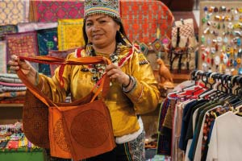
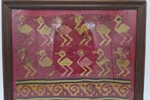
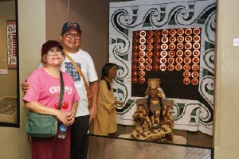

La iniciativa promueve la autonomía económica de las mujeres emprendedoras, así como la visibilización de los conocimientos y saberes tradicionales que sustentan sus negocios.

Las piezas de cerámica y textiles recuperados pertenecen a antiguas sociedades prehispánicas como tiahuanaco, chincha, chancay, chimú e inca.

El MUA es una iniciativa del Ministerio de Cultura que permite el ingreso gratuito a los museos estatales cada primer domingo del mes y promueve el acceso de la ciudadanía al patrimonio cultural.